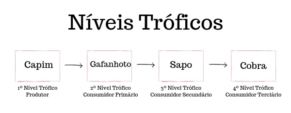
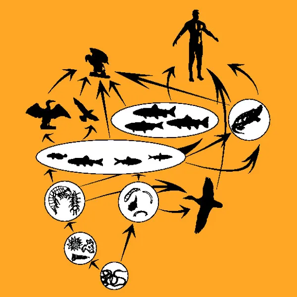

Cadeia alimentar é a sequência de alimentação entre os seres vivos, na qual uns alimentam-se dos outros, garantindo sua sobrevivência.
A partir dos seres que produzem o seu próprio alimento e geram energia, desenvolve-se uma sequência (cadeia) na qual um ser vivo é consumido por outro. O último animal dessa cadeia, após sua morte, servirá de alimento para os organismos decompositores, encerrando o ciclo.
Cada parte dessa cadeia é chamada de nível trófico (nível de alimentação). Cada vez que um ser vivo se alimenta a energia do alimento tem uma parte utilizada sobre a forma de calorias e outra parte transferida para o seu consumidor. A energia original vai se perdendo no momento de cada transferência.
A energia dos alimentos tem seu início com os seres produtores (autótrofos) que geram a energia. O segundo nível trófico é composto por consumidores (heterótrofos): consumidores primários, secundários, terciários e quaternários. Já o último nível trófico é formado pelos seres decompositores que se alimentam de matéria orgânica.
"Nas cadeias alimentares, observamos a relação de alimentação existente entre os diferentes seres vivos de um ecossistema. A posição que cada ser vivo ocupa nessa cadeia recebe o nome de nível trófico. Produtores, consumidores e decompositores são os diferentes níveis tróficos observados nesse esquema."
"Os organismos produtores são o primeiro nível trófico observado em uma cadeia alimentar. Organismos desse nível são classificados como autotróficos, ou seja, são seres vivos capazes de produzir seu próprio alimento, não sendo necessário alimentar-se de outro ser vivo. As plantas e algas são organismos classificados como produtores."
"Os consumidores, como o próprio nome indica, são seres vivos que se alimentam de outros seres vivos para conseguirem a energia e os nutrientes necessários para sua sobrevivência. Organismos consumidores são, portanto, heterotróficos."
"Os organismos consumidores podem ser ainda classificados em primários, secundários, terciários, quaternários e assim sucessivamente. Entretanto, é importante destacar que as cadeias tendem a não ser muito grandes, sendo geralmente observadas cinco ou menos ligações. Entre as hipóteses que explicam por que as cadeias não se estendem muito está a hipótese energética, que sugere que o tamanho é limitado devido à baixa eficiência na transferência de energia."
"Os consumidores primários são aqueles que se alimentam do produtor. No esquema anterior, o consumidor primário é o gafanhoto. O organismo que se alimenta do consumidor primário é chamado de consumidor secundário. No exemplo, esse é o sapo. O consumidor terciário é aquele que se alimenta do secundário, como é o caso da cobra alimentando-se do sapo. Se no exemplo algum organismo estivesse alimentando-se do consumidor terciário, esse seria chamado de consumidor quartenário, e assim sucessivamente."
"Os decompositores são organismos que participam da cadeia alimentar realizando a decomposição da matéria orgânica, e atuam em todos os níveis tróficos. Assim como os consumidores, os decompositores são heterotróficos. São exemplos de organismos decompositores os fungos e as bactérias."
"A maior parte da energia que entra em um ecossistema é proveniente da radiação solar. Os organismos produtores que realizam fotossíntese absorvem energia solar e fixam-na em energia química. Quando os consumidores alimentam-se dos produtores, parte dessa energia segue para esses organismos, que, ao servirem de alimento para outros seres vivos, também lhes passam parte da energia. Esta, portanto, flui, em um sentido unidirecional, passando de um nível inferior para um superior."
"A cada nível, no entanto, há uma perda de parte da energia. As plantas, por exemplo, transformam a energia solar em química, porém utilizam parte dessa energia inicial para o processo de respiração. Portanto, apenas parte dela estará disponível para o nível seguinte, sendo esse um dos motivos pelos quais as cadeias alimentares não se alongam muito."
"Quando falamos em cadeias alimentares, referimo-nos a uma sequência de seres vivos que servem de alimento para outros. A teia, por sua vez, é a conexão de cadeias alimentares. As teias são uma melhor forma de compreender o funcionamento de um ecossistema, uma vez um organismo, na maioria dos casos, não apresenta apenas um tipo de presa."
"Outro ponto importante a ser destacado é que, ao analisarmos uma cadeia alimentar, verificamos que um ser vivo ocupa apenas um nível trófico específico. Na teia alimentar, por sua vez, um mesmo organismo pode ocupar níveis diferentes. Os animais onívoros, por exemplo, ao alimentarem-se de vegetais, são classificados como consumidores primários e, ao alimentarem-se de herbívoros, como consumidores secundários. Caso tenha mais interesse pelo assunto, leia nosso texto: Cadeia e teia alimentar."
"As cadeias alimentares mostram as relações de alimentação existentes em um determinado ecossistema. Quando uma nova espécie é acrescentada a esse local, essa pode causar desequilíbrios no ambiente. Caso não encontre alimento disponível naquela região, poderá rapidamente morrer e ser eliminada. Caso encontre-o, pode desencadear a competição com outro ser vivo, o que é prejudicial para o equilíbrio do ecossistema."
"Essa nova espécie introduzida pode também não ter predadores naturais e multiplicar-se de maneira excessiva, caso o ambiente seja favorável, o que pode levar à redução drástica de suas presas. Verificamos, portanto, que a introdução de uma nova espécie pode afetar negativamente as relações de alimentação naquele local."
"Outra situação conhecida é a extinção de uma espécie. Imaginemos, por exemplo, uma cadeia alimentar simples que envolve uma planta, um roedor, uma serpente e um gavião. Caso a serpente seja eliminada do ambiente, o gavião ficará sem alimento. Em contrapartida, o roedor pode multiplicar-se de maneira excessiva, devido à falta de predadores, o que poderá causar a diminuição de plantas no local. Com o tempo, a redução do número de plantas também impactará o roedor, que ficará sem alimento. Podemos perceber, portanto, que cada ser vivo é essencial para o equilíbrio do ecossistema."
"As cadeias alimentares mostram as relações de alimentação existentes em um determinado ecossistema. Quando uma nova espécie é acrescentada a esse local, essa pode causar desequilíbrios no ambiente. Caso não encontre alimento disponível naquela região, poderá rapidamente morrer e ser eliminada. Caso encontre-o, pode desencadear a competição com outro ser vivo, o que é prejudicial para o equilíbrio do ecossistema."
"Essa nova espécie introduzida pode também não ter predadores naturais e multiplicar-se de maneira excessiva, caso o ambiente seja favorável, o que pode levar à redução drástica de suas presas. Verificamos, portanto, que a introdução de uma nova espécie pode afetar negativamente as relações de alimentação naquele local."
"Outra situação conhecida é a extinção de uma espécie. Imaginemos, por exemplo, uma cadeia alimentar simples que envolve uma planta, um roedor, uma serpente e um gavião. Caso a serpente seja eliminada do ambiente, o gavião ficará sem alimento. Em contrapartida, o roedor pode multiplicar-se de maneira excessiva, devido à falta de predadores, o que poderá causar a diminuição de plantas no local. Com o tempo, a redução do número de plantas também impactará o roedor, que ficará sem alimento. Podemos perceber, portanto, que cada ser vivo é essencial para o equilíbrio do ecossistema."